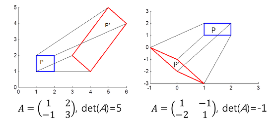
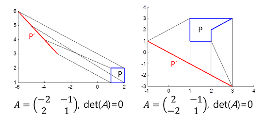
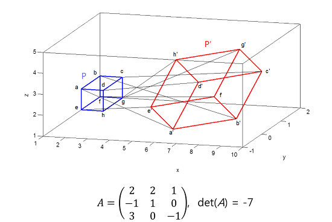
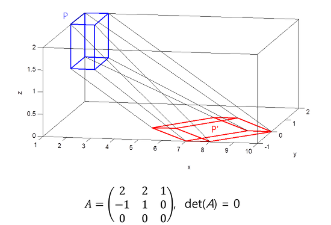

(b) Column vector of matrix II - Determinant
1. 행렬식의 의미
- X를 [x, y]$^{T}$, [x, y, z]$^{T}$ 등과 같이 좌표를 나타내는 벡터라고 했을 때, 행렬 A를 X’=AX와 같이 사용하면 행렬 A는 입력좌표 X를 X’으로 변환시켜주는 일종의 선형변환(linear transformation)으로 해석할 수 있다.
- 행렬식은 부피 또는 선형변환의 넓이 또는 부피의 보정 값 으로 볼 수 있다.
- det(A)>0이면 도형의 방향(orientation)이 보존되고 det(A)<0이면 도형의 방향이 보존 되지 않는다.
2. 2D 변환
3. 2D 변환 & det(A)=0
- det(A)=0, 넓이 보정값은 0
- det(A)=0, 차원 축소를 의미한다. 2D->1D or dot
4. 3D 변환
5. 3D 변환 & det(A)=0
- det(A)=0, 부피 보정값은 0
- det(A)=0, 차원 축소를 의미한다. 3D->2D or 1D or dot
6. 중요 특성
$$ \left|AB\right|=\left|A\right|\left|B\right| $$7. det(A)=0, 선형 독립 & 선형 종속
det(A)=0인 A(행렬, 연산자)는 피연산되는 모든 벡터들을
- 같은 (선 또는 면)방향으로 재배치 하거나,
- 같은 동일한 점으로 재배치 한다.
- 같은 방향 또는 하나의 점으로 재배치 하므로, det(A)=0 은, 행렬 A의 각 열벡터가 종속 성분이 있음을 의미한다.
행렬 A의 각 열벡터를 $v_{1}, v_{2}, v_{3}, \cdots$ 라고 하자.
$$ c_1v_{1}+c_2v_{2}+c_3v_{3}+\cdots=0 $$$$ A\vec{c}=0 $$- 각 열벡터가 선형 독립 이라면, 각 열벡터에 곱한 계수가 모두 0이어야만 한다. 따라서, 계수는 0인 자명해만 존재해야한다.
- 각 열벡터가 선형 종속 이라면, 각 열벡터에 곱한 계수가 모두 0이 아닌것이 존재해야 한다. 따라서, 0이외의 자명하지 않은 해도 존재해야한다.